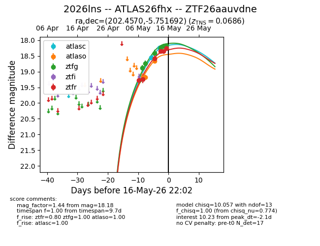
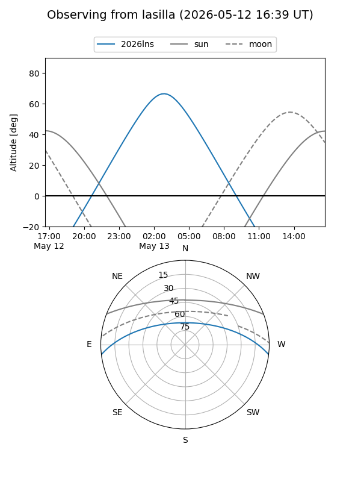
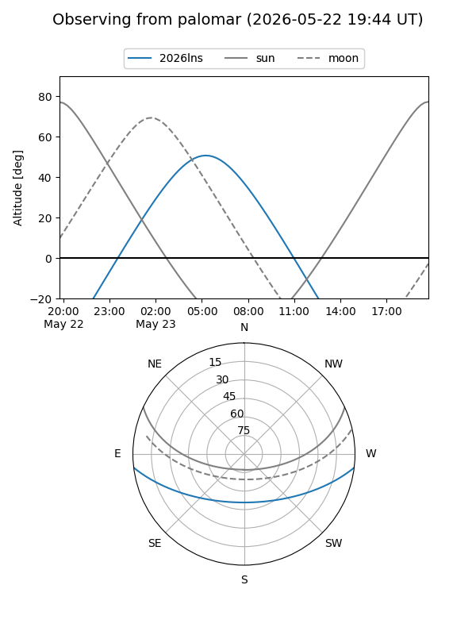
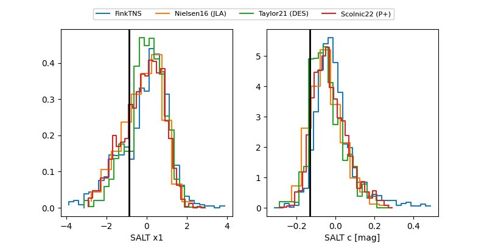

2026lns
Target 2026lns at 2026-05-16 22:04
Aliases and brokers:
FINK: link
Lasair: link
ALeRCE: link
TNS: link
YSE: link
alt names
ZTF26aauvdne (ztf,fink_ztf)
2026lns (tns,yse)
ATLAS26fhx (atlas)
Coordinates:
equatorial (ra, dec) = 202.4570,-5.75169
equatorial (HMS+DMS) = 13:29:49.67,-05:45:06.09
galactic (l, b) = (320.1126,+55.83419)
Flags:
confirmed ia
Photometry:
last atlasc=18.24, atlaso=18.66, ztfg=18.18, ztfr=18.26
2 atlasc, 2 atlaso, 7 ztfg, 6 ztfr detections
Lightcurve

Visibility


Additional plots
